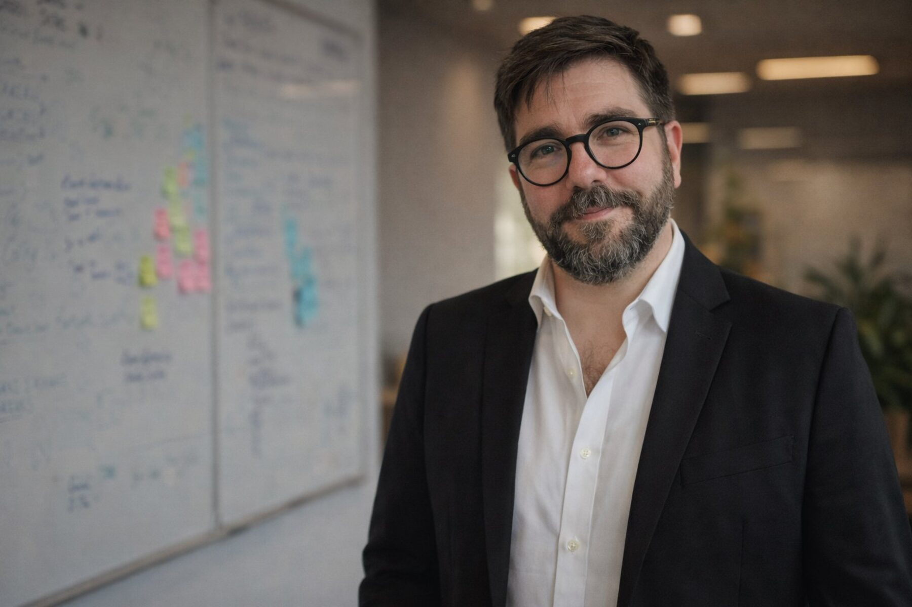
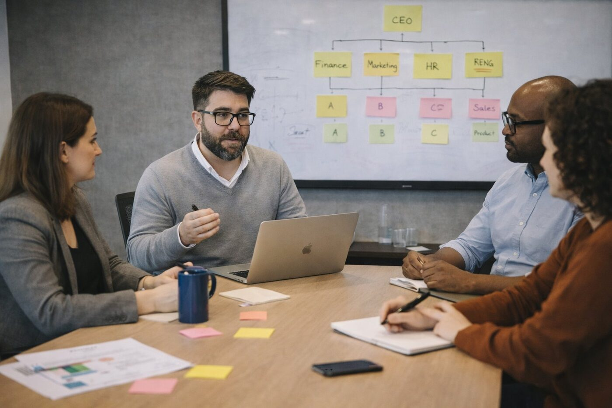

Turning strategy
into performance.
We partner with organizations to close the gap between potential and execution — building clarity, ownership, and impact at every level.
Performance is not accidental.
It is designed.
We focus on what truly drives results: how people think, how they make decisions, and how they act every day. Because sustainable performance doesn't come from processes alone, but from aligned behaviors across leaders and teams.
We work from the inside out — combining business insight, leadership development, and coaching to build clarity, strengthen ownership, and elevate execution.
How we work
It starts with a realization
Most leaders were promoted because of what they do — not because of how they lead. And at some point, what made them successful… stops being enough.
Beyond training, into experience
We don't design workshops. We design experiences that challenge habits, expand perspectives, and create moments of insight that leaders remember — and act upon.
Where mindset meets behavior
Leadership is not a set of tools. It's a way of thinking, deciding, and showing up. Our approach works at that level — where real transformation happens.
From insight to impact
Because awareness alone doesn't change anything. What matters is what leaders do differently the next day — in conversations, decisions, and the way they lead their teams.

- Custom leadership programs
- Experiential workshops & offsites
- Leadership journeys (3–6 months)
- 360° feedback & assessment integration
- Experience across industries & cultures
- Practical, behavior-focused approach
- Proven impact on leadership effectiveness
The hidden gap
On paper, everything is aligned: strategy, goals, structure. But in reality, behaviors don't follow — and that's where performance breaks.
Culture is what people do
Not what's written on the wall. Not what's said in town halls. Culture is built in daily decisions, conversations, and what leaders tolerate or reinforce.
Making the invisible visible
We help organizations identify the patterns, dynamics, and behaviors that are holding performance back — often the ones no one is explicitly addressing.
Turning intention into execution
Real transformation happens when clarity meets accountability. When people know what's expected — and feel responsible for delivering on it, every day.

- Leadership & culture frameworks
- Performance & accountability systems
- Team effectiveness interventions
- Change & transformation initiatives
- Strong business + HR perspective
- Focus on execution, not theory
- Sustainable culture change
A space leaders rarely have
Time to think. To step back. To question. In fast-paced environments, this space doesn't exist — and yet, it's where the best decisions are made.
Behind every challenge, a decision
Every business problem ultimately comes down to choices: what to prioritize, what to change, what to let go. Coaching helps leaders see those choices clearly.
Expanding perspective
Often, the biggest limitation is not capability — it's perspective. We work to challenge assumptions and open new ways of thinking and acting.
From reflection to action
Coaching is not about staying in conversation. It's about translating clarity into action — in real situations, with real consequences.

- 1:1 coaching for leaders & high potentials
- Role transition support
- Strategic thinking & decision-making
- Shadow coaching & real-time support
- International leadership experience
- Coaching + business integration
- Tailored, high-impact approach
The problem with most training
People understand the content. They even agree with it. But weeks later, nothing has really changed.
Learning that sticks
Real learning happens when people apply, experiment, and reflect — not just when they listen.
From knowledge to behavior
We design programs that bridge that gap — turning concepts into actions that can be practiced immediately in the real world.
Building capabilities that last
Because true capability is not what people know. It's what they consistently do — under pressure, in complexity, and over time.

- Communication, feedback & influence
- Train-the-trainer programs
- Corporate academies & learning journeys
- Blended learning experiences
- Focus on behavior change
- Engaging, experiential formats
- Designed for real-world application
How we design performance
from the inside out
We follow a structured approach to understand your reality, align your leaders, and drive sustainable performance through people.
Diagnose
We uncover how decisions are made, how teams operate, and where performance is being limited — identifying the real drivers behind results.
Align
We define priorities, expectations, and success criteria — turning strategy into something clear, actionable, and shared.
Activate
We design targeted interventions that shift behaviors and embed new ways of working into daily operations.
Sustain
We reinforce habits, track progress, and build accountability — ensuring performance is sustained over time.

Performance is not accidental — it is designed.
At the core of our work is a simple belief: what truly drives results is how people think, how they make decisions, and how they act every day. Sustainable performance doesn't come from processes alone, but from aligned behaviors across leaders and teams.
We work from the inside out. Our approach is highly practical, deeply human, and always connected to real business outcomes. Because real transformation doesn't happen in theory — it happens in how people show up, decide, and lead every day.
It started with a question
I couldn't ignore.
Why do some teams create extraordinary results… while others, with the same talent, don't? I saw it again and again. Same structures. Same processes. Same level of expertise. Completely different outcomes. That curiosity became my path.
I built my career at the intersection of business and human behavior — across corporate environments, consulting, and academia — working with leaders and teams in different countries and cultures. I learned how to design strategies, build systems, and drive performance. But something was missing.
Because performance, I realized, is not just built. It's experienced. That perspective shifted even further when I deepened my approach through the Disney Institute. There, one idea changed everything: great organizations don't just operate — they intentionally design the experience people live every day.
Today, I partner with HR and business leaders to design those experiences from the inside out. Not just developing skills — but shaping mindsets. Not just delivering programs — but enabling transformation.
So leaders show up with clarity. Teams act with ownership. And performance becomes a natural consequence, not a forced outcome.
HR & organizational development professional with experience across corporate, consulting, and academic environments.
Certified executive & team coach, NLP practitioner, trained at the Disney Institute in leadership excellence and employee engagement.
Working across Europe and Latin America, bringing a cross-cultural perspective to leadership and organizational change.
Milan, Italy.
Ready to transform
your business?
Whether it's a leadership program, a culture shift, or 1:1 coaching — let's start with a conversation.